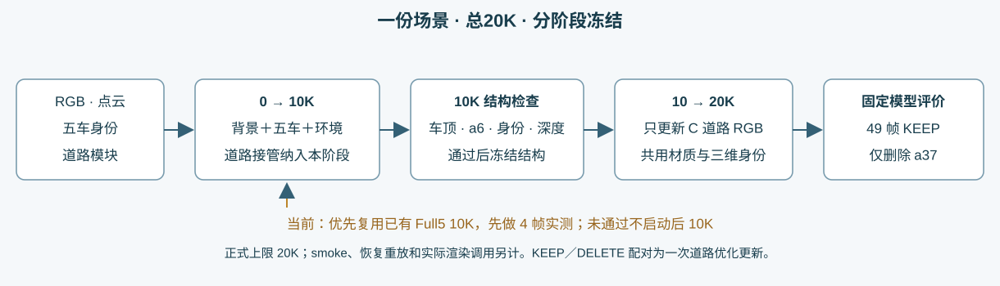
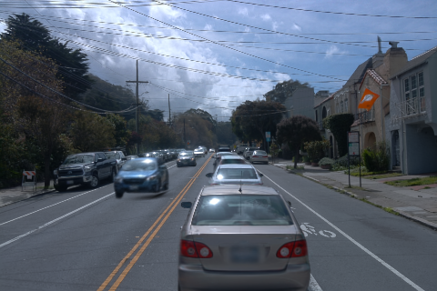
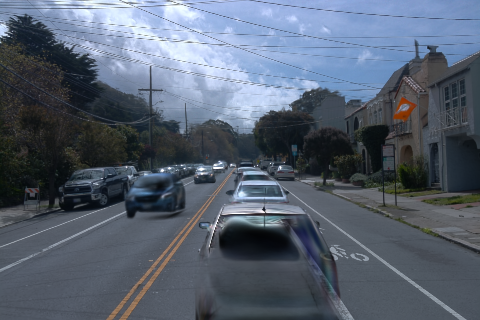
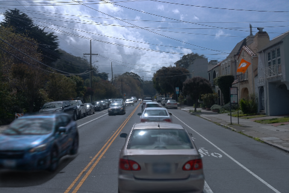
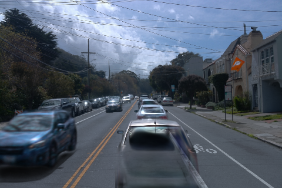
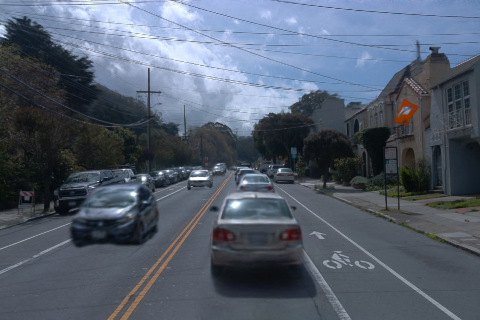
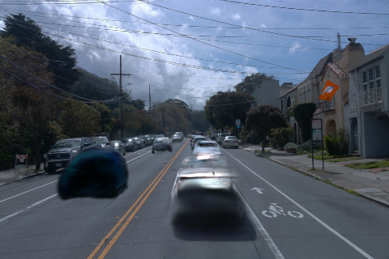
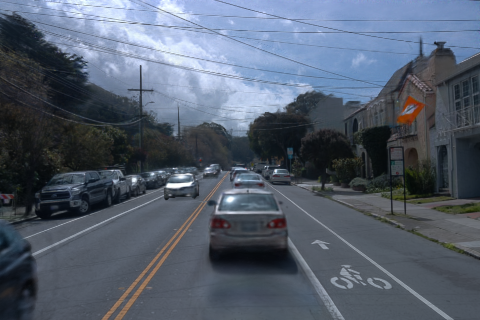
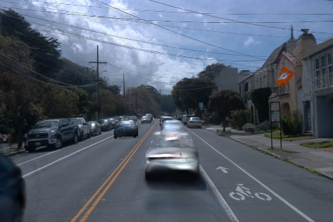

本路线已由用户撤回，以下仅保留已完成的纯Full5诊断；未启动端到端训练、语义校准或材质长跑。当前已回到原21K的v44＋a5底座，新增只训练C道路材质。
Scene008：单场景 Full5 与道路的分阶段验证
结构关尚未通过，后10K道路材质训练未启动。原生 Full5 10K 的KEEP保留了a5车顶结构，但仅按来源ID删除a37后，105/137仍有大块车体残留；a6及近车细节也与旧v44有明显差距。当前进行4帧身份接口与完整C道路接入对照，不能称为已复现v44删除效果。
统一流程与当前边界

当前优先复用已有Full5 10K。原历史配置的学习率horizon为30K，实际训练完成10K；它当时尚未包含C道路模块。此次复用是接入验证，不把它改写成已完成从零的统一前10K。所有后续正式道路优化至多10K，一次KEEP／DELETE配对计一次更新，实际原生渲染调用、smoke和恢复重放另记。
动态集合固定为[5,6,18,26,37]，删除集合独立为[]或[37]。单份Full5包含其自身背景、五车和环境；不加载第二份v44背景，也不把另一场景的a5补回。
真实4帧：同一Full5 10K，零训练
以下均为原生完整480×320输出，KEEP／DELETE共用同一权重。来源ID与谱系保持原值，来源37的贡献已被接口排除；剩余车体说明来源标签不能直接当成当前完整语义归属。
| 帧 | KEEP | 仅删除来源37 |
|---|---|---|
| raw094 |  |  |
| raw105 |  |  |
| raw128 |  |  |
| raw137 |  |  |


下一项实际验证
先对最小单场景adapter做原生float一致性验证，再插入完整40392行C道路，检查前景遮挡与深度。另测静态和动态高斯对原身份mask的可见贡献，在保留谱系的同时生成固定语义旁表；KEEP必须保持一致，DELETE再按语义归属过滤。旁表属于身份工程验证，不会改善源a6的模糊或凭空恢复几何。
4帧验证未通过，不放行49帧正式材质训练。若结构和身份通过，先做约10分钟真实GPU smoke，覆盖反向、finite loss、显存、保存、评价、完整恢复和阶段切换，再进入后半程。GPU保持开机。
截至本基线的实际新增计算
8次原生renderer调用，24次实际raster kernel前向（其中含原renderer自身的split输出）；反向0次，优化更新0次，约8.10秒。旧道路分支通过G的1769逻辑前向／1678反向及E/F800正式＋16工程更新属于独立历史，口径和费用不混合。
本报告为进行中现场，尚无结构验收、材质放行或最终49帧结果。人的最终评价尚未提供。